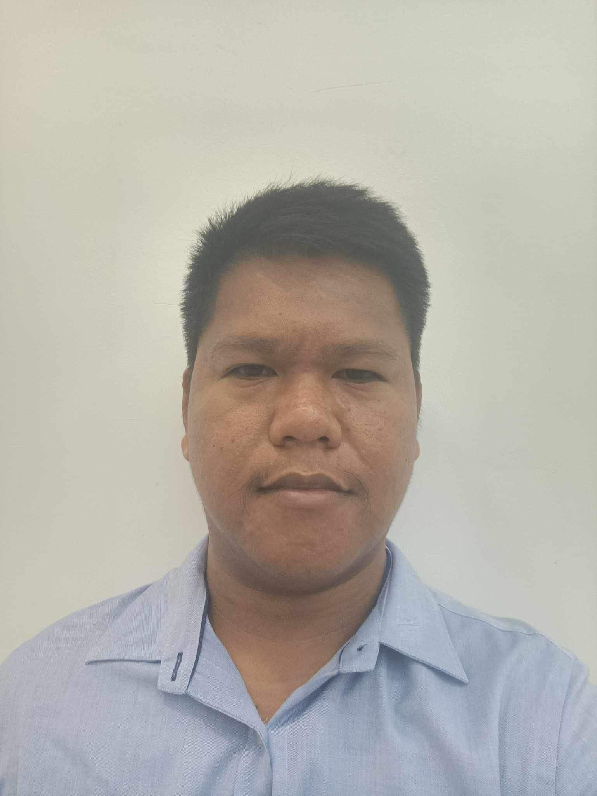

Enrique T. Lodovice

Summary
I am a licensed Electronics and Communications Engineer. I have years of
experience on being a field technical support configuring network devices
such as ROUTERS & SWITCHES, computer hardware and software, including
hardware necessities of an office such as cctv and biometric door locks.
In my latest employment, i work as an instructor at a university handling
major subjects such Embedded systems which mainly focuses on Internet of
Things (IoT) and Automations using Microcontrollers (MCU) and node MCU for
IoT applications. I also handled Networking and Computer Electronics
Subjects.
Education
-
Bachelor's of Science in Electronics Engineering - University of Cebu-Banilad
-
Secondary - Cebu Technological University - Argao Campus
-
Primary - Jampang Elememtary School
Work Experience
-
IT Associate - BPO Seats
April 2018 - January 2020
-
Configure and Install Network Devices such as Routers and Switches
-
Troubleshoot Computer Systems both hardware and software
-
Instructor (Computer Technologu Major) - CTU - Argao
September 2020 - January 2024
Subjects Handled:
-
Networking - Configure network devices and Understanding network architecture
-
Embedded System - Integration of hardware and software using microcontrolles
such as nodeMCU and arduino boards for Internet of Things (ioT) applications.
-
Computer Systems - Computer Hardware and Software
-
Fundamentals of Programming - Basic programming structure using the C language
Skills
- Web Development
- Knowledge of Networking
- PC troubleshooting
- ioT integration using Microcontroller Units
- Knowledge of telecommunications
- Knowledge of Electronc components and devices
Certifications
- Licensed Electronics Engineer
- Licensed Electronics Technician
Additional Info